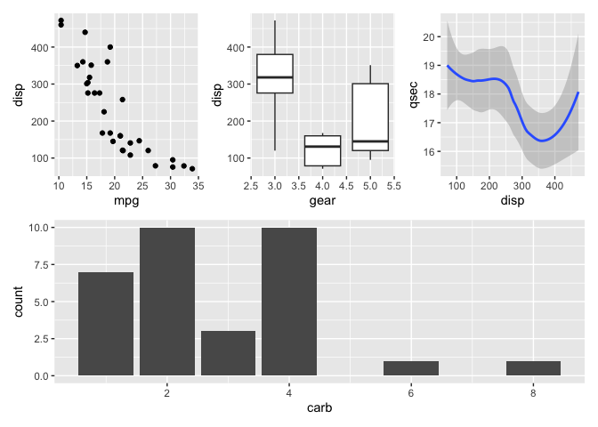

The goal of patchwork is to make it ridiculously simple to combine separate ggplots into the same graphic. As such it tries to solve the same problem as gridExtra::grid.arrange() and cowplot::plot_grid but using an API that incites exploration and iteration.
Basic example
The usage of patchwork is simple: just add plots together!
library(ggplot2)
library(patchwork)
p1 <- ggplot(mtcars) + geom_point(aes(mpg, disp))
p2 <- ggplot(mtcars) + geom_boxplot(aes(gear, disp, group = gear))
p1 + p2
patchwork provides rich support for arbitrarily complex layouts with full alignment. As an example, check out this very readable code for nesting three plots on top of a third:
p3 <- ggplot(mtcars) + geom_smooth(aes(disp, qsec))
p4 <- ggplot(mtcars) + geom_bar(aes(carb))
(p1 | p2 | p3) /
p4
Learn more
patchwork can do so much more. Check out the guides for learning everything there is to know about all the different features:
Code of Conduct
Please note that the patchwork project is released with a Contributor Code of Conduct. By contributing to this project, you agree to abide by its terms.